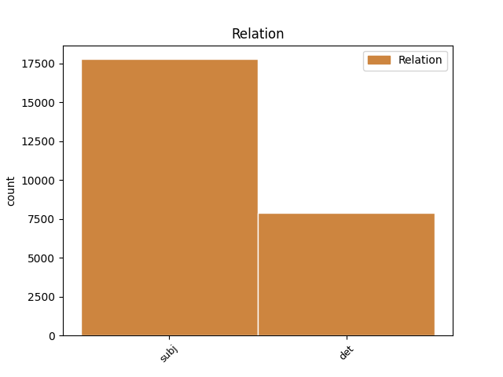
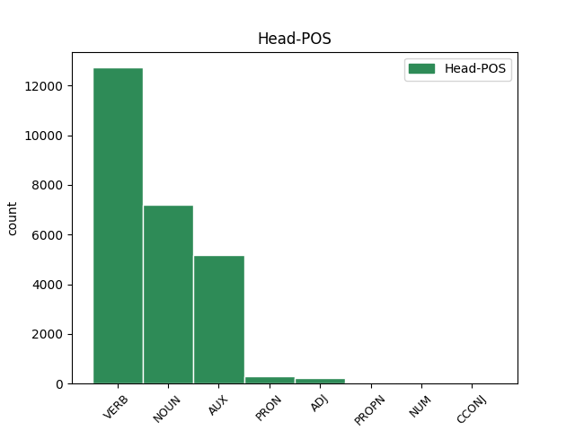
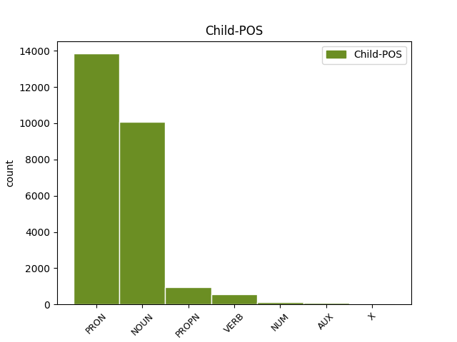

Distribution of features within this leaf



Agreement Rules sorted by frequency.
- When the dependent token is the subject(subj) of the head token, and the dependent token is NOUN.
1 cum _ _ _ _ 0 _ _ _
2 enim _ _ _ _ 0 _ _ _
3 forma _ _ _ _ 0 _ _ _
4 sit _ _ _ _ 0 _ _ _
5 actus _ _ _ _ 0 _ _ _
6 , _ _ _ _ 0 _ _ _
7 materia materia NOUN A1|grn1|casA|gen2 Case=Nom|Degree=Pos|Gender=Fem|Number=Sing 9 subj _ _
8 vero _ _ _ _ 0 _ _ _
9 sit sum AUX N3|modB|tem1|gen6 Mood=Sub|Number=Sing|Person=3|Tense=Pres|VerbForm=Fin|Voice=Act 0 _ _ _
10 ens _ _ _ _ 0 _ _ _
11 in _ _ _ _ 0 _ _ _
12 potentia _ _ _ _ 0 _ _ _
13 tantum _ _ _ _ 0 _ _ _
14 ; _ _ _ _ 0 _ _ _
15 nullo _ _ _ _ 0 _ _ _
16 modo _ _ _ _ 0 _ _ _
17 id _ _ _ _ 0 _ _ _
18 quod _ _ _ _ 0 _ _ _
19 est _ _ _ _ 0 _ _ _
20 ex _ _ _ _ 0 _ _ _
21 materia _ _ _ _ 0 _ _ _
22 et _ _ _ _ 0 _ _ _
23 forma _ _ _ _ 0 _ _ _
24 compositum _ _ _ _ 0 _ _ _
25 , _ _ _ _ 0 _ _ _
26 potest _ _ _ _ 0 _ _ _
27 esse _ _ _ _ 0 _ _ _
28 alterius _ _ _ _ 0 _ _ _
29 forma _ _ _ _ 0 _ _ _
30 secundum _ _ _ _ 0 _ _ _
31 se _ _ _ _ 0 _ _ _
32 totum _ _ _ _ 0 _ _ _
33 . _ _ _ _ 0 _ _ _
1 cum _ _ _ _ 0 _ _ _
2 enim _ _ _ _ 0 _ _ _
3 forma _ _ _ _ 0 _ _ _
4 sit _ _ _ _ 0 _ _ _
5 actus _ _ _ _ 0 _ _ _
6 , _ _ _ _ 0 _ _ _
7 materia _ _ _ _ 0 _ _ _
8 vero _ _ _ _ 0 _ _ _
9 sit _ _ _ _ 0 _ _ _
10 ens _ _ _ _ 0 _ _ _
11 in _ _ _ _ 0 _ _ _
12 potentia _ _ _ _ 0 _ _ _
13 tantum _ _ _ _ 0 _ _ _
14 ; _ _ _ _ 0 _ _ _
15 nullo _ _ _ _ 0 _ _ _
16 modo _ _ _ _ 0 _ _ _
17 id _ _ _ _ 0 _ _ _
18 quod _ _ _ _ 0 _ _ _
19 est _ _ _ _ 0 _ _ _
20 ex _ _ _ _ 0 _ _ _
21 materia _ _ _ _ 0 _ _ _
22 et _ _ _ _ 0 _ _ _
23 forma _ _ _ _ 0 _ _ _
24 compositum _ _ _ _ 0 _ _ _
25 , _ _ _ _ 0 _ _ _
26 potest _ _ _ _ 0 _ _ _
27 esse _ _ _ _ 0 _ _ _
28 alterius _ _ _ _ 0 _ _ _
29 forma _ _ _ _ 0 _ _ _
30 secundum _ _ _ _ 0 _ _ _
31 se se PRON F1|grn1|casD|gen3 Case=Acc|Degree=Pos|Gender=Neut|Number=Sing|PronType=Prs|Reflex=Yes 0 _ _ _
32 totum totus PRON F1|grn1|casD|gen3 Case=Acc|Degree=Pos|Gender=Neut|Number=Sing|PronType=Ind 31 det _ SpaceAfter=No
33 . _ _ _ _ 0 _ _ _
1 si _ _ _ _ 0 _ _ _
2 autem _ _ _ _ 0 _ _ _
3 secundum _ _ _ _ 0 _ _ _
4 aliquid _ _ _ _ 0 _ _ _
5 sui _ _ _ _ 0 _ _ _
6 sit _ _ _ _ 0 _ _ _
7 forma _ _ _ _ 0 _ _ _
8 , _ _ _ _ 0 _ _ _
9 id _ _ _ _ 0 _ _ _
10 quod qui PRON F1|grn1|casA|gen3 Case=Nom|Degree=Pos|Gender=Neut|Number=Sing|PronType=Rel 11 subj _ _
11 est sum AUX N3|modA|tem1|gen6 Mood=Ind|Number=Sing|Person=3|Tense=Pres|VerbForm=Fin|Voice=Act 0 _ _ _
12 forma _ _ _ _ 0 _ _ _
13 dicimus _ _ _ _ 0 _ _ _
14 animam _ _ _ _ 0 _ _ _
15 , _ _ _ _ 0 _ _ _
16 et _ _ _ _ 0 _ _ _
17 id _ _ _ _ 0 _ _ _
18 cuius _ _ _ _ 0 _ _ _
19 est _ _ _ _ 0 _ _ _
20 forma _ _ _ _ 0 _ _ _
21 dicimus _ _ _ _ 0 _ _ _
22 primum _ _ _ _ 0 _ _ _
23 animatum _ _ _ _ 0 _ _ _
24 , _ _ _ _ 0 _ _ _
25 ut _ _ _ _ 0 _ _ _
26 supra _ _ _ _ 0 _ _ _
27 dictum _ _ _ _ 0 _ _ _
28 est _ _ _ _ 0 _ _ _
29 . _ _ _ _ 0 _ _ _
1 relinquitur _ _ _ _ 0 _ _ _
2 ergo _ _ _ _ 0 _ _ _
3 solus _ _ _ _ 0 _ _ _
4 modus _ _ _ _ 0 _ _ _
5 quem _ _ _ _ 0 _ _ _
6 aristoteles aristoteles PROPN C1|grn1|casA|gen1|vgr1 Case=Nom|Degree=Pos|Gender=Masc|Number=Sing 7 subj _ _
7 ponit pono VERB L3|modA|tem1|gen6 Mood=Ind|Number=Sing|Person=3|Tense=Pres|VerbForm=Fin|Voice=Act 0 _ _ _
8 , _ _ _ _ 0 _ _ _
9 quod _ _ _ _ 0 _ _ _
10 hic _ _ _ _ 0 _ _ _
11 homo _ _ _ _ 0 _ _ _
12 intelligit _ _ _ _ 0 _ _ _
13 , _ _ _ _ 0 _ _ _
14 quia _ _ _ _ 0 _ _ _
15 principium _ _ _ _ 0 _ _ _
16 intellectivum _ _ _ _ 0 _ _ _
17 est _ _ _ _ 0 _ _ _
18 forma _ _ _ _ 0 _ _ _
19 ipsius _ _ _ _ 0 _ _ _
20 . _ _ _ _ 0 _ _ _
1 illud _ _ _ _ 0 _ _ _
2 enim _ _ _ _ 0 _ _ _
3 quo _ _ _ _ 0 _ _ _
4 primo _ _ _ _ 0 _ _ _
5 aliquid _ _ _ _ 0 _ _ _
6 operatur _ _ _ _ 0 _ _ _
7 , _ _ _ _ 0 _ _ _
8 est _ _ _ _ 0 _ _ _
9 forma _ _ _ _ 0 _ _ _
10 eius _ _ _ _ 0 _ _ _
11 cui _ _ _ _ 0 _ _ _
12 operatio _ _ _ _ 0 _ _ _
13 attribuitur _ _ _ _ 0 _ _ _
14 , _ _ _ _ 0 _ _ _
15 sicut _ _ _ _ 0 _ _ _
16 quo _ _ _ _ 0 _ _ _
17 primo _ _ _ _ 0 _ _ _
18 sanatur _ _ _ _ 0 _ _ _
19 corpus _ _ _ _ 0 _ _ _
20 , _ _ _ _ 0 _ _ _
21 est _ _ _ _ 0 _ _ _
22 sanitas _ _ _ _ 0 _ _ _
23 , _ _ _ _ 0 _ _ _
24 et _ _ _ _ 0 _ _ _
25 quo _ _ _ _ 0 _ _ _
26 primo _ _ _ _ 0 _ _ _
27 scit scio VERB M3|modA|tem1|gen6 Mood=Ind|Number=Sing|Person=3|Tense=Pres|VerbForm=Fin|Voice=Act 30 subj _ _
28 anima _ _ _ _ 0 _ _ _
29 , _ _ _ _ 0 _ _ _
30 est sum AUX N3|modA|tem1|gen6 Mood=Ind|Number=Sing|Person=3|Tense=Pres|VerbForm=Fin|Voice=Act 0 _ _ _
31 scientia _ _ _ _ 0 _ _ _
32 ; _ _ _ _ 0 _ _ _
1 nec _ _ _ _ 0 _ _ _
2 hoc _ _ _ _ 0 _ _ _
3 excluditur _ _ _ _ 0 _ _ _
4 , _ _ _ _ 0 _ _ _
5 si _ _ _ _ 0 _ _ _
6 una unus NUM F1|grn1|casA|gen2 Case=Nom|Degree=Pos|Gender=Fem|Number=Sing|NumType=Card 9 subj _ _
7 illarum _ _ _ _ 0 _ _ _
8 formarum _ _ _ _ 0 _ _ _
9 sit sum AUX N3|modB|tem1|gen6 Mood=Sub|Number=Sing|Person=3|Tense=Pres|VerbForm=Fin|Voice=Act 0 _ _ _
10 perfectior _ _ _ _ 0 _ _ _
11 et _ _ _ _ 0 _ _ _
12 continens _ _ _ _ 0 _ _ _
13 in _ _ _ _ 0 _ _ _
14 se _ _ _ _ 0 _ _ _
15 virtute _ _ _ _ 0 _ _ _
16 alias _ _ _ _ 0 _ _ _
17 . _ _ _ _ 0 _ _ _
1 primo _ _ _ _ 0 _ _ _
2 quidem _ _ _ _ 0 _ _ _
3 , _ _ _ _ 0 _ _ _
4 quia _ _ _ _ 0 _ _ _
5 nulla _ _ _ _ 0 _ _ _
6 forma _ _ _ _ 0 _ _ _
7 substantialis _ _ _ _ 0 _ _ _
8 est _ _ _ _ 0 _ _ _
9 per _ _ _ _ 0 _ _ _
10 se _ _ _ _ 0 _ _ _
11 sensibilis _ _ _ _ 0 _ _ _
12 , _ _ _ _ 0 _ _ _
13 quia _ _ _ _ 0 _ _ _
14 quod _ _ _ _ 0 _ _ _
15 quid _ _ _ _ 0 _ _ _
16 est sum AUX N3|modA|tem1|gen6 Mood=Ind|Number=Sing|Person=3|Tense=Pres|VerbForm=Fin|Voice=Act 17 subj _ _
17 est sum AUX N3|modA|tem1|gen6 Mood=Ind|Number=Sing|Person=3|Tense=Pres|VerbForm=Fin|Voice=Act 0 _ _ _
18 obiectum _ _ _ _ 0 _ _ _
19 intellectus _ _ _ _ 0 _ _ _
20 , _ _ _ _ 0 _ _ _
21 ut _ _ _ _ 0 _ _ _
22 dicitur _ _ _ _ 0 _ _ _
23 in _ _ _ _ 0 _ _ _
24 iii _ _ _ _ 0 _ _ _
25 de _ _ _ _ 0 _ _ _
26 anima _ _ _ _ 0 _ _ _
27 . _ _ _ _ 0 _ _ _
1 quia _ _ _ _ 0 _ _ _
2 vero _ _ _ _ 0 _ _ _
3 fortuita _ _ _ _ 0 _ _ _
4 sunt _ _ _ _ 0 _ _ _
5 quae _ _ _ _ 0 _ _ _
6 sunt _ _ _ _ 0 _ _ _
7 praeter _ _ _ _ 0 _ _ _
8 intentionem _ _ _ _ 0 _ _ _
9 ; _ _ _ _ 0 _ _ _
10 bona bonum X J1|grn1|casJ|gen3 Case=Nom|Degree=Pos|Gender=Neut|Number=Plur 17 subj _ _
11 autem _ _ _ _ 0 _ _ _
12 moralia _ _ _ _ 0 _ _ _
13 praeter _ _ _ _ 0 _ _ _
14 intentionem _ _ _ _ 0 _ _ _
15 esse _ _ _ _ 0 _ _ _
16 non _ _ _ _ 0 _ _ _
17 possunt possum VERB N3|modA|tem1|gen9 Mood=Ind|Number=Plur|Person=3|Tense=Pres|VerbForm=Fin|VerbType=Mod|Voice=Act 0 _ _ _
18 , _ _ _ _ 0 _ _ _
19 cum _ _ _ _ 0 _ _ _
20 in _ _ _ _ 0 _ _ _
21 electione _ _ _ _ 0 _ _ _
22 consistant _ _ _ _ 0 _ _ _
23 : _ _ _ _ 0 _ _ _
24 respectu _ _ _ _ 0 _ _ _
25 eorum _ _ _ _ 0 _ _ _
26 non _ _ _ _ 0 _ _ _
27 potest _ _ _ _ 0 _ _ _
28 dici _ _ _ _ 0 _ _ _
29 aliquis _ _ _ _ 0 _ _ _
30 bene _ _ _ _ 0 _ _ _
31 vel _ _ _ _ 0 _ _ _
32 male _ _ _ _ 0 _ _ _
33 fortunatus _ _ _ _ 0 _ _ _
34 ; _ _ _ _ 0 _ _ _
Disagree Examples:
1 ergo _ _ _ _ 0 _ _ _
2 beatitudo beatitudo NOUN C1|grn1|casA|gen2 Case=Nom|Degree=Pos|Gender=Fem|Number=Sing 5 subj _ _
3 et _ _ _ _ 0 _ _ _
4 deus _ _ _ _ 0 _ _ _
5 sunt sum AUX N3|modA|tem1|gen9 Mood=Ind|Number=Plur|Person=3|Tense=Pres|VerbForm=Fin|Voice=Act 0 _ _ _
6 idem _ _ _ _ 0 _ _ _
7 . _ _ _ _ 0 _ _ _
1 intellectus intellectus NOUN D1|grn1|casA|gen1 Case=Nom|Degree=Pos|Gender=Masc|Number=Sing 8 subj _ _
2 igitur _ _ _ _ 0 _ _ _
3 et _ _ _ _ 0 _ _ _
4 voluntas _ _ _ _ 0 _ _ _
5 in _ _ _ _ 0 _ _ _
6 deo _ _ _ _ 0 _ _ _
7 non _ _ _ _ 0 _ _ _
8 sunt sum AUX N3|modA|tem1|gen9 Mood=Ind|Number=Plur|Person=3|Tense=Pres|VerbForm=Fin|Voice=Act 0 _ _ _
9 ut _ _ _ _ 0 _ _ _
10 potentiae _ _ _ _ 0 _ _ _
11 , _ _ _ _ 0 _ _ _
12 sed _ _ _ _ 0 _ _ _
13 solum _ _ _ _ 0 _ _ _
14 ut _ _ _ _ 0 _ _ _
15 actiones _ _ _ _ 0 _ _ _
16 . _ _ _ _ 0 _ _ _
1 patet _ _ _ _ 0 _ _ _
2 etiam _ _ _ _ 0 _ _ _
3 ex _ _ _ _ 0 _ _ _
4 praedictis _ _ _ _ 0 _ _ _
5 quod _ _ _ _ 0 _ _ _
6 multitudo multitudo NOUN C1|grn1|casA|gen2 Case=Nom|Degree=Pos|Gender=Fem|Number=Sing 24 subj _ _
7 actionum _ _ _ _ 0 _ _ _
8 quae _ _ _ _ 0 _ _ _
9 deo _ _ _ _ 0 _ _ _
10 attribuitur _ _ _ _ 0 _ _ _
11 , _ _ _ _ 0 _ _ _
12 ut _ _ _ _ 0 _ _ _
13 intelligere _ _ _ _ 0 _ _ _
14 , _ _ _ _ 0 _ _ _
15 velle _ _ _ _ 0 _ _ _
16 , _ _ _ _ 0 _ _ _
17 producere _ _ _ _ 0 _ _ _
18 res _ _ _ _ 0 _ _ _
19 , _ _ _ _ 0 _ _ _
20 et _ _ _ _ 0 _ _ _
21 similia _ _ _ _ 0 _ _ _
22 , _ _ _ _ 0 _ _ _
23 non _ _ _ _ 0 _ _ _
24 sunt sum AUX N3|modA|tem1|gen9 Mood=Ind|Number=Plur|Person=3|Tense=Pres|VerbForm=Fin|Voice=Act 0 _ _ _
25 diversae _ _ _ _ 0 _ _ _
26 res _ _ _ _ 0 _ _ _
27 : _ _ _ _ 0 _ _ _
28 cum _ _ _ _ 0 _ _ _
29 quaelibet _ _ _ _ 0 _ _ _
30 harum _ _ _ _ 0 _ _ _
31 actionum _ _ _ _ 0 _ _ _
32 in _ _ _ _ 0 _ _ _
33 deo _ _ _ _ 0 _ _ _
34 sit _ _ _ _ 0 _ _ _
35 ipsum _ _ _ _ 0 _ _ _
36 eius _ _ _ _ 0 _ _ _
37 esse _ _ _ _ 0 _ _ _
38 , _ _ _ _ 0 _ _ _
39 quod _ _ _ _ 0 _ _ _
40 est _ _ _ _ 0 _ _ _
41 unum _ _ _ _ 0 _ _ _
42 et _ _ _ _ 0 _ _ _
43 idem _ _ _ _ 0 _ _ _
44 . _ _ _ _ 0 _ _ _
1 ex _ _ _ _ 0 _ _ _
2 hoc _ _ _ _ 0 _ _ _
3 autem _ _ _ _ 0 _ _ _
4 confutatur _ _ _ _ 0 _ _ _
5 error _ _ _ _ 0 _ _ _
6 antiquorum _ _ _ _ 0 _ _ _
7 philosophorum _ _ _ _ 0 _ _ _
8 qui qui PRON F1|grn1|casA|gen1 Case=Nom|Degree=Pos|Gender=Masc|Number=Sing|PronType=Rel 9 subj _ _
9 ponebant pono VERB L3|modA|tem2|gen9 Aspect=Imp|Mood=Ind|Number=Plur|Person=3|Tense=Imp|VerbForm=Fin|Voice=Act 0 _ _ _
10 materiae _ _ _ _ 0 _ _ _
11 omnino _ _ _ _ 0 _ _ _
12 nullam _ _ _ _ 0 _ _ _
13 causam _ _ _ _ 0 _ _ _
14 esse _ _ _ _ 0 _ _ _
15 , _ _ _ _ 0 _ _ _
16 eo _ _ _ _ 0 _ _ _
17 quod _ _ _ _ 0 _ _ _
18 actionibus _ _ _ _ 0 _ _ _
19 particularium _ _ _ _ 0 _ _ _
20 agentium _ _ _ _ 0 _ _ _
21 semper _ _ _ _ 0 _ _ _
22 videbant _ _ _ _ 0 _ _ _
23 aliquid _ _ _ _ 0 _ _ _
24 actioni _ _ _ _ 0 _ _ _
25 praeiacere _ _ _ _ 0 _ _ _
26 : _ _ _ _ 0 _ _ _
1 effectus effectus NOUN D1|grn1|casA|gen1 Case=Nom|Degree=Pos|Gender=Masc|Number=Sing 5 subj _ _
2 suis _ _ _ _ 0 _ _ _
3 causis _ _ _ _ 0 _ _ _
4 proportionaliter _ _ _ _ 0 _ _ _
5 respondent respondeo VERB K3|modA|tem1|gen9 Mood=Ind|Number=Plur|Person=3|Tense=Pres|VerbForm=Fin|Voice=Act 0 _ _ _
6 : _ _ _ _ 0 _ _ _
7 ut _ _ _ _ 0 _ _ _
8 scilicet _ _ _ _ 0 _ _ _
9 effectus _ _ _ _ 0 _ _ _
10 in _ _ _ _ 0 _ _ _
11 actu _ _ _ _ 0 _ _ _
12 causis _ _ _ _ 0 _ _ _
13 actualibus _ _ _ _ 0 _ _ _
14 attribuamus _ _ _ _ 0 _ _ _
15 , _ _ _ _ 0 _ _ _
16 et _ _ _ _ 0 _ _ _
17 effectus _ _ _ _ 0 _ _ _
18 in _ _ _ _ 0 _ _ _
19 potentia _ _ _ _ 0 _ _ _
20 causis _ _ _ _ 0 _ _ _
21 quae _ _ _ _ 0 _ _ _
22 sunt _ _ _ _ 0 _ _ _
23 in _ _ _ _ 0 _ _ _
24 potentia _ _ _ _ 0 _ _ _
25 ; _ _ _ _ 0 _ _ _
26 et _ _ _ _ 0 _ _ _
27 similiter _ _ _ _ 0 _ _ _
28 effectus _ _ _ _ 0 _ _ _
29 particulares _ _ _ _ 0 _ _ _
30 causis _ _ _ _ 0 _ _ _
31 particularibus _ _ _ _ 0 _ _ _
32 , _ _ _ _ 0 _ _ _
33 universalibus _ _ _ _ 0 _ _ _
34 vero _ _ _ _ 0 _ _ _
35 universales _ _ _ _ 0 _ _ _
36 ; _ _ _ _ 0 _ _ _
37 ut _ _ _ _ 0 _ _ _
38 docet _ _ _ _ 0 _ _ _
39 philosophus _ _ _ _ 0 _ _ _
40 , _ _ _ _ 0 _ _ _
41 in _ _ _ _ 0 _ _ _
42 ii _ _ _ _ 0 _ _ _
43 physicorum _ _ _ _ 0 _ _ _
44 . _ _ _ _ 0 _ _ _